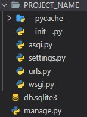
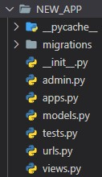

django
django
Django is a free and open source framework for building web apps with Python. It is used for the "backend".
Setting up Django
Creating a Django Project
-

- install the Django package into your projects "virtual environment"
pipenv install django - create a Django project
django-admin startproject PROJECT_NAME* .*- the PROJECT_NAME folder contains the essential Python files
- the manage.py file which is created next to the PROJECT_NAME folder, is a "wrapper" wrapped around "django-admin"
running django on a local server
- starts the local server on port 8000* (can be viewed in the
browser*)
python manage.py runserver - to quit the server press
CTRL+cin the terminal
Creating a "Django App"
Every Django project is a collection of various apps. Each app provides a certain type of functionality.
-

- create a new django app
python manage.py startapp APP_NAME* - NOTE: Every app needs to be registered in the settings.py under INSTALLED_APP in
the Django project folder by adding there name.
example: register new app
INSTALLED_APPS = [ 'django.contrib.admin', 'django.contrib.auth', 'django.contrib.contenttypes', 'django.contrib.sessions', 'django.contrib.messages', 'django.contrib.staticfiles', 'NEW_APP_1', 'NEW_APP_2', ]predefined django apps explanation django.contrib.admincreates an admin interface to manage data django.contrib.authis used to authenticates users django.contrib.sessionsis not used any more, a session is a temporary memory on the server to manage user data, can be deleted django.contrib.messagesis used to display onetime messages to the user django.contrib.staticfilesserves static files like images, css files, ... -
NEW_APP structure
folder / file explanation migrationis a folder in which we generate database tables admin.pydetermines how the app will look apps.pyis where the app is configured models.pymodel classes are defined in this app, to pull out data from the database and present it to the user test.pycontains the unit tests urls.pyneeds to be manually created if needed, is where the "urls" are "mapped" to the "views" views.pyis a request handler